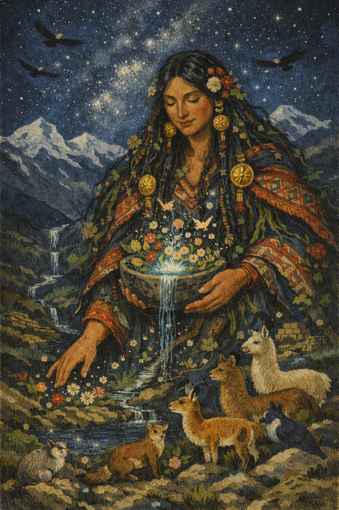
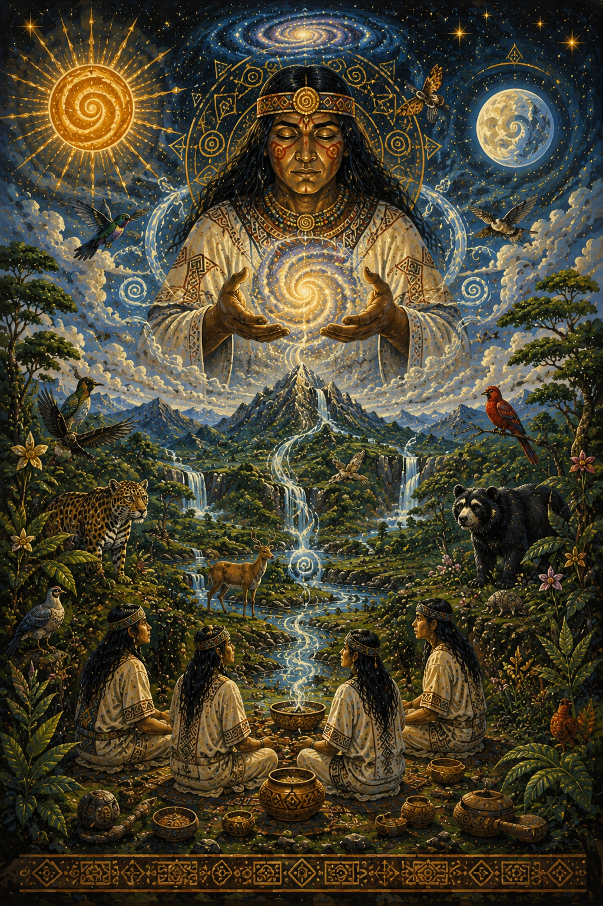
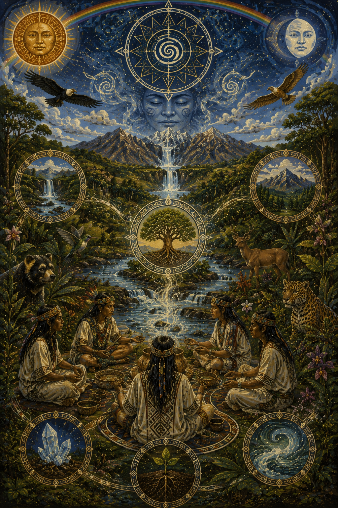
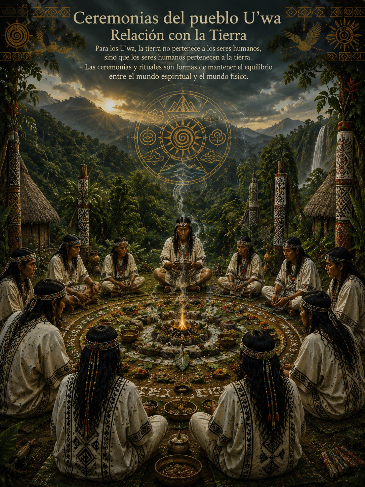
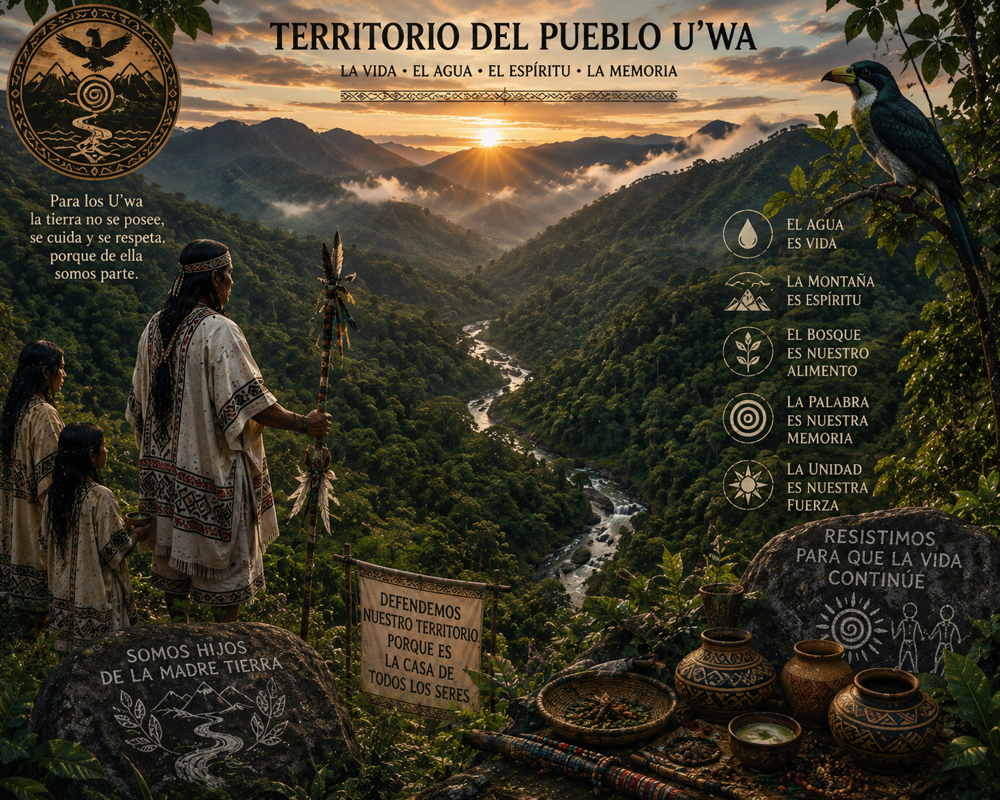
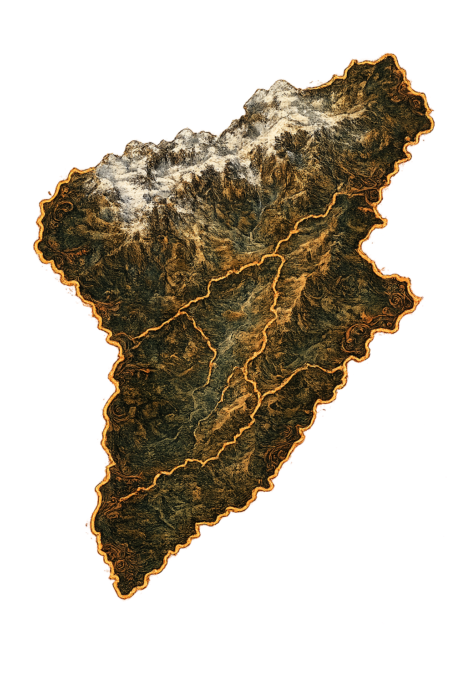
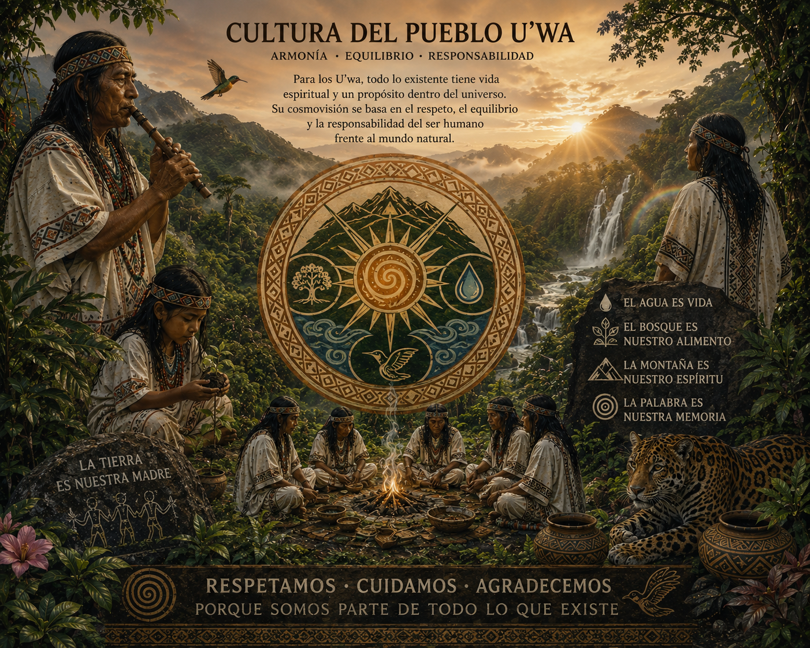
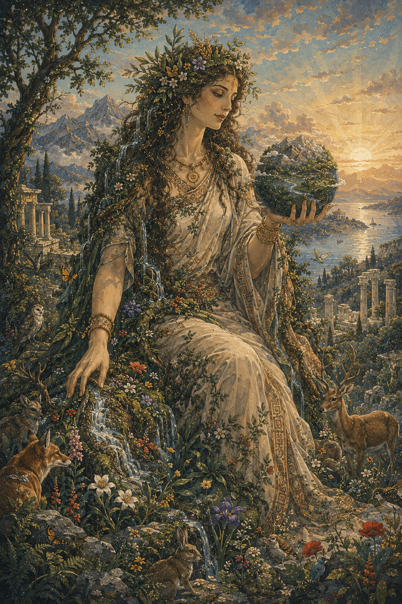
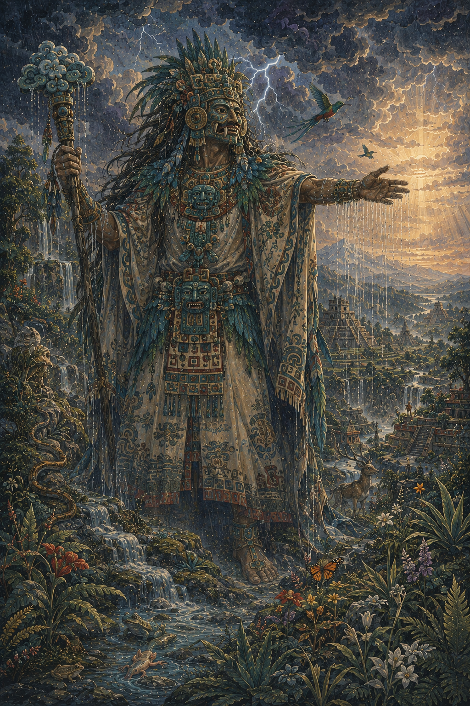

Pachamama
Diosa andina de la tierra, la fertilidad y la naturaleza sagrada.
Para el pueblo U’wa, el origen del mundo está profundamente ligado a Serankua, el espíritu creador que dio forma al universo, la tierra, el agua y todos los seres vivos.
En su cosmovisión, todo lo existente posee vida y equilibrio espiritual, por lo que la naturaleza no es un recurso, sino un ser sagrado que debe ser respetado.

Según la tradición U’wa, el mundo fue creado con un equilibrio perfecto entre lo espiritual y lo natural. Cada elemento del entorno tiene un propósito dentro del orden cósmico.
El agua, la tierra, las montañas y el cielo son considerados entidades vivas que mantienen la armonía del universo.


Para los U’wa, la tierra no pertenece a los seres humanos, sino que los seres humanos pertenecen a la tierra. Esta visión determina su forma de vida y sus prácticas culturales.
Las ceremonias y rituales son formas de mantener el equilibrio entre el mundo espiritual y el mundo físico.
A lo largo del tiempo, el pueblo U’wa ha defendido su territorio y su cosmovisión frente a diferentes formas de intervención externa.
Su resistencia cultural está basada en la protección de la vida, el agua y el equilibrio espiritual del mundo.

El pueblo U’wa habita principalmente en la Sierra Nevada del Cocuy y regiones de los departamentos de Boyacá, Arauca, Casanare y Norte de Santander, en Colombia.
Su territorio es considerado sagrado, ya que representa el centro del equilibrio del mundo según su cosmovisión.


La cosmovisión U’wa representa una de las visiones más profundas de respeto por la naturaleza, donde todo lo existente tiene un valor espiritual y un propósito dentro del universo.
Su cultura enfatiza la armonía, el equilibrio y la responsabilidad del ser humano frente al mundo natural.

Diosa andina de la tierra, la fertilidad y la naturaleza sagrada.

Madre primordial de la Tierra en la mitología griega, origen de toda la vida.

Dios mesoamericano de la lluvia y los fenómenos naturales.